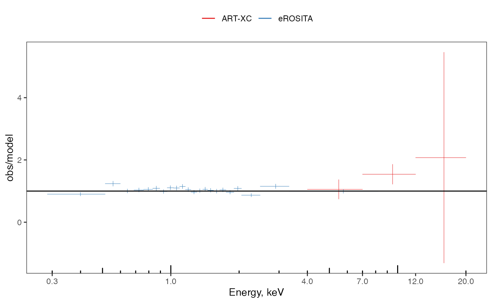

library(xrayr)
#> Warning: replacing previous import 'constants::syms' by 'dplyr::syms' when
#> loading 'xrayr'
library(ggplot2)
head(xray_spec, 5)
#> # A tibble: 5 × 6
#> energy err_energy flux_obs err_obs flux_model telescope
#> <dbl> <dbl> <dbl> <dbl> <dbl> <chr>
#> 1 0.400 0.114 0.240 0.0153 0.267 eROSITA
#> 2 0.556 0.0427 0.584 0.0387 0.472 eROSITA
#> 3 0.643 0.0442 0.574 0.0376 0.572 eROSITA
#> 4 0.723 0.0358 0.695 0.0459 0.672 eROSITA
#> 5 0.796 0.0367 0.758 0.0473 0.719 eROSITA
ggplot(
data = xray_spec,
mapping = aes(
x = energy,
y = flux_model,
xwidth = err_energy,
color = telescope
)
) +
geom_xray_stepcount() +
geom_xray_pointrange(aes(y = flux_obs, ywidth = err_obs),
upper_nsigma = 3, # default 2
min_y = 1e-2 # default NULL -> automatic
) +
scale_x_log10(breaks = c(0.3, 1, 4, 7, 12, 20)) +
scale_y_log10() +
annotation_logticks() +
scale_color_brewer(palette = 'Set1') +
xlab('Energy, keV') +
ylab('cts/s/keV') +
theme_xray_plot()
ggplot(xray_spec, aes(color = telescope)) +
geom_xray_ratio(aes(
x = energy,
xwidth = err_energy,
obs = flux_obs,
obs_err = err_obs,
model = flux_model
)) +
geom_hline(yintercept = 1) +
scale_x_log10(breaks = c(0.3, 1, 4, 7, 12, 20)) +
annotation_logticks(sides = 'b') +
xlab('Energy, keV') +
ylab('obs/model') +
scale_color_brewer(palette = 'Set1') +
theme_xray_plot()
#> Warning in f(...): ***Warning: do not scale y axis, `xray_ratio`
#> Warning in f(...): ***Warning: do not scale y axis, `xray_ratio`
nh(213.162500, -65.392778, r_arcmin = 5, showInfo = T)
#> _r RAJ2000 DEJ2000 NHI
#> "arcmin" "deg" "deg" "cm-2"
#> # A tibble: 5 × 4
#> `_r` RAJ2000 DEJ2000 NHI
#> <dbl> <dbl> <dbl> <dbl>
#> 1 2.12 213. -65.4 5.14e21
#> 2 2.25 213. -65.4 5.02e21
#> 3 2.43 213. -65.4 5.03e21
#> 4 3.02 213. -65.4 5.12e21
#> 5 4.88 213. -65.3 5.13e21
#> ----
#> This value is derived from the 2D HI4PI map,
#> a full-sky HI survey by the HI4PI collaboration 2016,
#> Astronomy & Astrophysics, 594, A116.
#> ----
#> *RA target: 213.1625
#> *DEC target: -65.392778
#> RA range [213.0238, 213.2793]
#> DEC range [-65.4288, -65.3357]
#> Average mean nH (cm**-2): 5.09e+21
#> Weighted average nH (cm**-2): 5.103e+21
#> [1] 5.103136e+21